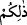

doğacak, seni ve mülkünü yok edecek.”
Fir’avn bunun üzerine Benî İsrâîl kabîlelerinde doğan bütün erkek çocukların
öldürülmesini emretti. Ebelere dedi ki: “Beni İsrâîl kabîlelerinden elinizde doğacak,
doğduğunu gördüğünüz, yahud işittiğiniz, ne kadar erkek çocuk varsa, derhal
öldüreceksiniz. Kız çocuklarına dokunmayacaksınız.” Bu işle görevlendirilen ebeler,
can korkusuyla birçok cinâyet işlediler. Rivâyete göre; Mûsâ’nın yaşamasını önlemek
için, onikibin çocuk, doksan bin de yeni doğan bebek öldürülmüştür. Allah, öldürülen
bu çocukların tüm kuvvetlerini, Mûsâ (a.s.)’a tasarruf gücü olarak vermiştir. Bu
sebebten, onun mûcizeleri çok güçlüdür.
Ardından Benî İsrâîl’in ihtiyarlarında ölüm oranı arttı. Kıbtîlerin reisleri Fir’avn’a
çıkarak: “Ölüm, İsrâîloğulları’nı silip götürüyor. Küçüklerini biz öldürüyoruz;
büyükleri de ölüyorlar. Böyle giderse bütün işleri biz yapmak zorunda kalacağız”
dediler.
Bunun üzerine Fir’avn, yeni doğan erkek çocukların bir sene öldürülüp bir sene sağ
bırakılmasını emretti. Hârûn (a.s.) yeni doğan çocukların boğazlanmadığı, Mûsâ (a.s.)
da boğazlandığı senede doğmuştur.
Fir’avn’ın çabaları, Allah’ın hüküm ve kazâsından hiçbir şeyi engelleyemedi.
Mûsâ’nın doğmasına ve yetişmesine engel olmak için inâdla paçaları sıvayıp işe
koyulduğu halde başaramadı. Çünkü Allah Teâlâ: “Kâfirler hoşlanmasalar da, Allah
nûrunu tamamlamaktan aslâ vazgeçmez.” (et-Tevbe, 9/32) buyuruyor.
Erkek çocuklarının öldürülüp kız çocuklarının afvedilerek sağ bırakılması görünüşte
İsrâîloğulları için büyük bir imtihan ve belâ idi. Bâzılarının sağ bırakılması görünüşte
afv ve azâb etmemek gibi görünse de aslında onları büyük belâlar beklemekteydi. Zira
onlara, ağır işlerde çalıştırılmak ve köle yapılmak için dokunulmamıştı. Ayrıca
oğlanların öldürülüp kızların sağ bırakılması babalara çok zor gelen bir musîbetti.
Bu büyük belâ ve imtihan, Allah’ın Fir’avn ve ehlini sizin üzerinize musallat
kılmasıyla gerçekleşmiştir. Büyük belâ anlamını veren “Belâ ve azîm” kelimelerinin
mânâlarındaki şiddeti artırmak için ikisi de “nekre” getirilmiştir.
Yukarıda verdiğimiz mânânın aksine “bu” anlamındaki ( __WORD__ ) kelimesi ile işâret
edilen şey “Allah’ın sizi Fir’avn’dan kurtarması” da olabilir. O zaman “Belâ” kelimesi
nimet mânâsına gelir, çünkü belânın aslı imtihândır. Allah Teâlâ, kullarını iki şekilde
imtihan eder. Bazen şükretmeleri için nimetlerle dener. Bu onlara “minha” yâni lütuftur.
Bazan da sabretmeleri için zorluklarla dener. Bu onlara “mihnet” yâni zorluktur. “Biz
sizi hayırla da şerle de imtihân ederiz.” (el-Enbiyâ, 21/35) âyetinde görüldüğü gibi,
“belâ” (imtihan) iyi ve kötü şeyler hakkında kullanılabilir.
Âyet, şu mânâya da işâret etmektedir. Fir’avn’dan kurtulmak, nefs-i emmâreden
kurtulmaktır. Çünkü nefs-i emmâre; kötü ahlâkı ve mezmûm sıfatlarıyla o nûrlu rûha
işkence etmekte; hayvânî isteklerini yerine getirmek için, bâzı kalbî sıfatları sağ
bırakırken, rûhun oğulları olan güzel sıfatları boğazlamaktadır.